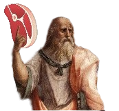

Filéosofia 🥩

Citações
Vídeos
Citações Filosóficas
"O único conhecimento que pode ser chamado de verdadeiro é aquele que nos dá a capacidade de viver melhor." - Sócrates
Saiba mais sobre Sócrates
"Aquilo que se faz por amor está sempre além do bem e do mal." - Nietzsche
Saiba mais sobre Nietzsche
"O homem nasce livre, mas em toda parte encontra-se acorrentado." - Rousseau
Saiba mais sobre Jean-Jacques Rousseau
"Uma vida não questionada não merece ser vivida." - Platão
Saiba mais sobre Platão
"A vida só pode ser compreendida olhando-se para trás, mas só pode ser vivida olhando-se para frente." - Søren Kierkegaard
Saiba mais sobre Kierkegaard
Vídeos Recomendados